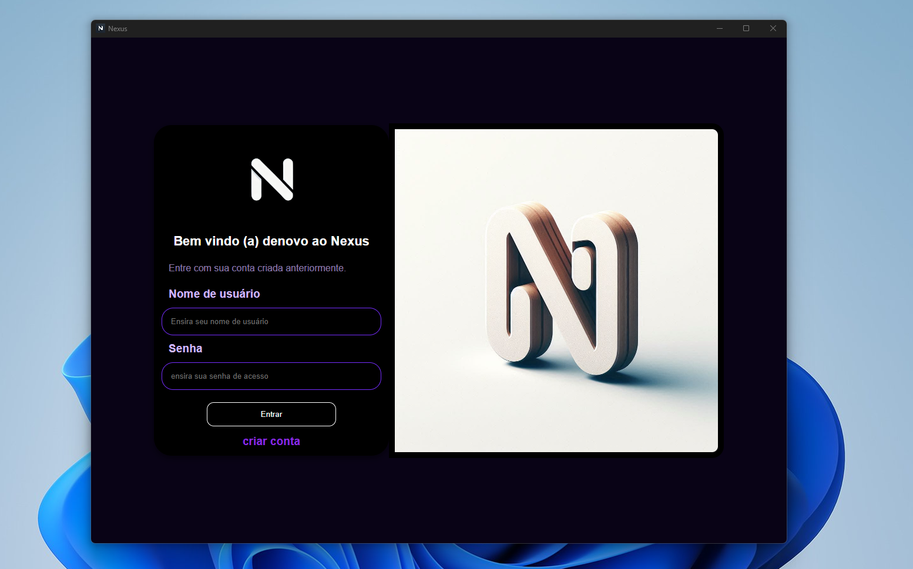

Projeto Nexus
Nexus é app de mensagens instantâneas multimidia (texto, links e imagens) totalmente offline para comunicação local sem internet e wm tempo real. o App tem uma interface simples mais funcional e intuitiva com configurações básicas de cor do fundo do layout e alteração de dados do usuário.
clique em saiba mais para visualizar outros detalhes do projeto.
Mais detalhes
Login
Cadastro

Chat principal